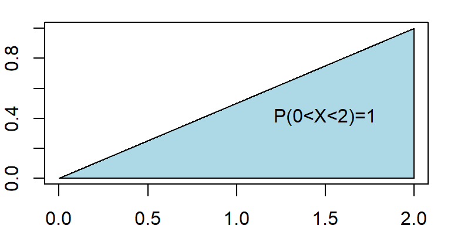
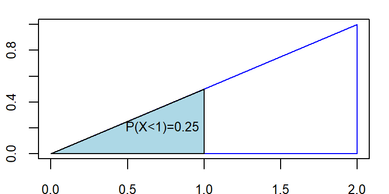

5 Continuous r.v and probability density function
5.1 Definition
A continuous r.v \(X\) must have a probability density function (PDF) \(f(x)\) such that
1) \(f(x) \ge 0\) [Non-negativity]
2) \(\int_{x\in \mathbb{R}} f(x)dx =1\) [Total AREA under the curve \(f(x)\) always 1]
3) \(P(a<X<b)=\int_a^b f(x) dx\)
5.2 Illustration with an example
Given \(f(x)=\frac{1}{2}x \ \ ; 0\le x\le 2\)
a) Show/plot the graph of \(f(x)\).
b) Is \(f(x)\) a PDF?
c) Find \(P(X<1.0)\).
d) Find \(P(X=1.0)\)
Solution:
(a)
b) Here, \(f(x)\ge 0\) for all values of \(x\) in the interval \(0\le x\le2\).
Now, total area under curve \(f(x)\) from \(x=0\) to \(x=2\) is
\(\int_{0}^2 f(x)dx\)
\(=AREA \ \ of\ \ the\ \ SHADED\ \ Triangle\)

\[ =\frac{1}{2} \times base\times height \]
\[ =\frac{1}{2} \times 2\times 1=1 \]
So, total area under curve \(f(x)\) is \(1\) that is \(\int_{0}^{2} f(x)dx=1\).
Hence, \(f(x)\) is a PDF.
c) Here,
\[ P(X<1)=Area \ \ under\ \ the \ \ curve \ \ from \ \ x=0 \ \ to \ \ x=1 \]
\[ =Area \ \ of \ \ the \ \ SHADED \ \ Triangle \]

\[ =\frac{1}{2}\times 1 \times f(1)=\frac{1}{2}\times 1 \times 0.5=0.25 \]
Therefore \(P(X<1)=0.25\)
d) \(P(X=1.0)=0\) [Because there is no area at \(x=1.0\)]
Note
We always remember that Probability in an interval of \(X\) is actually the \(AREA\) under the pdf \(f(x)\).
Problem 6.2.1 A random variable has the following density function.
\[
f(x)=1-0.5x \ \ ; \ \ 0<x<2
\]
a) Graph the density function.
b) Verify that \(f(x)\) is a density function.
c) Fond \(P(X>1)\).
d) Find \(P(X<0.5)\).
e) Find \(P(X=1.5)\).
N.B: \(P(X=a)=0\) as well as \(P(X=b)=0\). So, \(P(X\le a )\) is same as \(P(X<a)\).
5.3 CDF of continuous r.v \(X\)
By definition, CDF,
\[ F(x)=P(X\le x)= \int_{-\infty}^{x} f(x)dx \]
Therefore,
\(f(x)=\frac{d}{dx} F(x)\).
\(P(a<X<b)=F(b)-F(a)\).
5.4 Expectation and variance of continuous r.v
If \(X\) is a continuous r.v with PDF \(f(x)\) then
Expected value of \(X\) is
\[ \mu=E(X)= \int_{x\in \mathbb{R}} x\cdot f(x)dx \] Variance of \(X\) is
\[ Var(X)=E(X^2)-\mu^2=\int_{x\in \mathbb{R}} x^2\cdot f(x)dx-\mu^2 \]
Example 3.11(Walpole et al. 2017) Suppose that the error in the reaction temperature, in \(^0C\), for a controlled laboratory experiment is a continuous random variable X having the probability density function
\[ f(x)=\frac{x^2}{3}; -1<x<2. \]
- Verify that \(f(x)\) is a density function.
- Find \(P(0< X \le 1)\).
Example 3.12(Walpole et al. 2017) Find \(F(x)\), and use it to evaluate \(P(0 < X\le1)\).
H.W: Find \(E(X)\) and \(Var(X)\) where,\(f(x)=\frac{x^2}{3}; -1<x<2\).
Exercise 3.29(Walpole et al. 2017) An important factor in solid missile fuel is the particle size distribution. Significant problems occur if the particle sizes are too large. From production data in the past, it has been determined that the particle size (in micrometers) distribution is characterized by
\[ f(x)=3x^{-4}; x> 1 \]
- Verify that this is a valid density function.
- Evaluate \(F(x)\).
- What is the probability that a random particle from the manufactured fuel exceeds 4 micrometers?
Exercise 3.69(Walpole et al. 2017) The life span in hours of an electrical component is a random variable with cumulative distribution function
\[ F(x)=1-e^{-\frac{x}{50}}; x>0 \]
Determine its probability density function (PDF).
Determine the probability that the life span of such a component will exceed 70 hours.
Exercise 3.36 (Walpole et al. 2017) On a laboratory assignment, if the equipment is working, the density function of the observed outcome, \(X\), is
\[ f(x)=2(1-x) \ \ ; 0<x<1 \]
Calculate \(P(X\le 1)\)
What is the probability that \(X\) will exceed 0.5?
Given that \(X \ge 0.5\), what is the probability that \(X\) will be less than 0.75?
Hints: We can solve this exercise by either using \(F(x)\) or simply drawing function \(f(x)\).